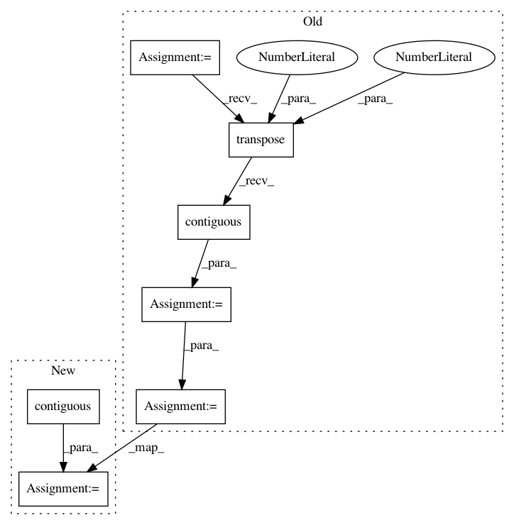

a7a12d157766b69cf4b1ddbb5fcdacfe485dc6fa,gpytorch/kernels/grid_interpolation_kernel.py,GridInterpolationKernel,_compute_grid,#GridInterpolationKernel#Any#Any#,116
Before Change
def _compute_grid(self, inputs, batch_dims):
batch_size, n_data, n_dimensions = inputs.size()
if batch_dims == (0, 2):
inputs = inputs.view(inputs.size(0), inputs.size(1), -1, 1)
inputs = inputs.transpose(1, 2).contiguous()
batch_size = batch_size * inputs.size(1)
n_dimensions = n_dimensions // inputs.size(1)
inputs = inputs.view(batch_size * n_data, n_dimensions)
interp_indices, interp_values = Interpolation().interpolate(self.grid, inputs)
interp_indices = interp_indices.view(batch_size, n_data, -1)
interp_values = interp_values.view(batch_size, n_data, -1)
return interp_indices, interp_values
def _inducing_forward(self, batch_dims, **params):
return super(GridInterpolationKernel, self).forward(self.grid, self.grid, batch_dims=batch_dims, **params)
After Change
n_dimensions = 1
batch_shape = inputs.shape[:-2]
inputs = inputs.contiguous().view(-1, n_dimensions)
interp_indices, interp_values = Interpolation().interpolate(self.grid, inputs)
interp_indices = interp_indices.view(*batch_shape, n_data, -1)
interp_values = interp_values.view(*batch_shape, n_data, -1)
return interp_indices, interp_values
In pattern: SUPERPATTERN
Frequency: 3
Non-data size: 7
Instances
Project Name: cornellius-gp/gpytorch
Commit Name: a7a12d157766b69cf4b1ddbb5fcdacfe485dc6fa
Time: 2019-04-03
Author: gpleiss@gmail.com
File Name: gpytorch/kernels/grid_interpolation_kernel.py
Class Name: GridInterpolationKernel
Method Name: _compute_grid
Project Name: mariogeiger/se3cnn
Commit Name: 6c06a88957549b1405f43361e4aa911abc56ef66
Time: 2018-10-04
Author: geiger.mario@gmail.com
File Name: se3cnn/kernel.py
Class Name: SE3Kernel
Method Name: combination
Project Name: dpressel/mead-baseline
Commit Name: f7afc7ae76ed2c328ed02f05e91ccceec8942e0b
Time: 2018-09-26
Author: dpressel@gmail.com
File Name: python/baseline/pytorch/seq2seq/model.py
Class Name: Seq2SeqModel
Method Name: make_input